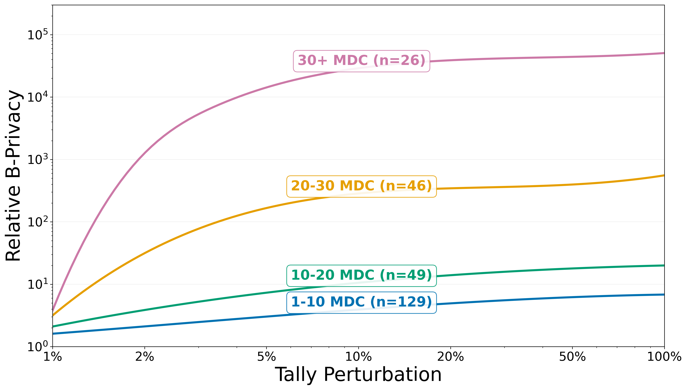

In traditional, one-vote-per-person voting systems, privacy equates with ballot secrecy: voting tallies are published, but individual voters’ choices are concealed.
Voting systems that weight votes in proportion to token holdings, though, are now prevalent in cryptocurrency and web3 systems. We show that these weighted-voting systems overturn existing notions of voter privacy. Our experiments demonstrate that even with secret ballots, publishing raw tallies often reveals voters’ choices.
Weighted voting thus requires a new framework for privacy. We introduce a notion called B-privacy whose basis is bribery, a key problem in voting systems today. B-privacy captures the economic cost to an adversary of bribing voters based on revealed voting tallies.
We propose a mechanism to boost B-privacy by noising voting tallies. We prove bounds on its tradeoff between B-privacy and transparency, meaning reported-tally accuracy. Analyzing 3,582 proposals across 30 Decentralized Autonomous Organizations (DAOs), we find that the prevalence of large voters (“whales”) limits the effectiveness of any B-Privacy-enhancing technique. However, our mechanism proves to be effective in cases without extreme voting weight concentration: among proposals requiring coalitions of ≥5 voters to flip outcomes, our mechanism raises B-privacy by a geometric mean factor of 4.1×.
Our work offers the first principled guidance on transparency-privacy tradeoffs in weighted-voting systems, complementing existing approaches that focus on ballot secrecy and revealing fundamental constraints that voting weight concentration imposes on privacy mechanisms.
How a tally betrays ballot secrecy
Suppose an election closes with 17 in favour and 11 against,
cast by five voters:
Alice (weight 12),
Bob (weight 7),
Carol (weight 4),
Dave (weight 3), and
Eve (weight 2).
The totals alone force every ballot into the open — two attacks do the work.
In favour
12
3
2
17
Against
7
4
11
Five ballots, two totals. Alice, Bob, Carol, Dave, and Eve cast in secret — but who voted for what?
Whale attack: Alice’s weight of 12 can’t fit inside a total of 11. → In favour.
Whale attack: Only 5 left on the favour side. Bob’s 7 won’t fit. → Against.
Precision attack: The remaining {4, 3, 2} must split into favour = 5, against = 4. The only subset summing to 4 is {4}, so Carol → Against, and Dave + Eve → In favour. Every ballot exposed.
Alice · w=12In favour
Bob · w=7Against
Carol · w=4Against
Dave · w=3In favour
Eve · w=2In favour
The attack, in the wild
We ran the same deanonymization attack across 3,582 proposals from 30
DAOs. Each bubble below is one DAO — positioned by
the average share of ballots and voting weight an attacker can
recover from the raw tally alone. Bubble size encodes the average
number of voters per proposal.
Even on average, many DAOs leak a substantial fraction of voting
weight from the tally alone.
Noise as a defense
A straightforward fix is to publish only the winner of the election rather than the full tally. This eliminates the leakage but however would sacrifice transparency, omitting critical statistics—such as the margin of victory and the rate of voter participation—that are non-negotiable for achieving trust in governance.
A better approach is to publish a noised tally: a small amount of calibrated randomness is added to each option's total. Done correctly, the reported winner stays the same, but the noise blurs the exact counts enough that an attacker can no longer pin down with certainty which voter's weight went where.
We ran the same deanonymization attack on noised tallies, and found that noise
can substantially reduce the fraction of ballots and voting weight an attacker
can recover.
Raw tallyNoised tallyNoise impact
Bubbles slide down and to the left: noise reduces both the
fraction of ballots leaked and the fraction of voting weight
leaked.
Privacy as bribery cost
The whale and precision attacks show that tallies can leak, but they are only heuristics. They don't tell us what the strongest adversary can do against a given tally. For that, we need a well-defined privacy notion.
Existing definitions in the token-weighted setting diverge sharply depending on whether they focus on leaked weights or leaked ballots, which we have seen can be completely uncorrelated. We instead propose a privacy definition that instead captures leakage through its impact on the election integrity: the more a tally reveals, the easier it is for an adversary to bribe voters into flipping the outcome.
B‑privacy is the minimum total bribe an adversary must commit to flip an outcome with high confidence, given only what the published tally reveals. An adversary can only condition the bribes on the information revealed by the tally. As seen in the previous section, when adding noise, it is harder for the adversary to know how a specific voter voted, making it harder to verify whether a voter complied with the contract. This uncertainty translates into extra cost for the adversary to successfully overturn the election, and is reflected in a higher B-privacy.
We can see below how an adversary would strategize to bribe a specific voter in three different elections with different tally disclosures. One that reveals the exact tally with the individual ballots, another that only reveals the winner, and a third one that reveals a noised tally.
Phase 1 of 5The offer
Public tally
Every ballot is visible (or deanonymizable).
Adversary
Alice · w=3
1. Offer
2. Alice votes
3. Tally published
4. Verification
5. Outcome
Noised tally
Totals are published with calibrated noise.
Adversary
Alice · w=3
1. Offer
2. Alice votes
3. Tally published
4. Verification
5. Outcome
Winner‑only
Only the winning option is revealed.
Adversary
Alice · w=3
1. Offer
2. Alice votes
3. Tally published
4. Verification
5. Outcome
This example showcases the tradeoff between transparency and privacy in token weighted elections. The less information reported as an election result, the higher B-Privacy. However, less information also means less transparency, which can undermine trust in the election process.
B‑Privacy Across DAOs
We compute B-Privacy across multiple DAOs to understand how the choice of the tally disclosure mechanism affects privacy. The chart below shows the relative B-Privacy, that is, the ratio of B-Privacy under a given mechanism to B-Privacy under a raw tally (where there is no privacy), for two tally disclosure mechanisms: only revealing the winner and revealing a noised tally. Each row represents a DAO, and each dot represents the B-Privacy for that DAO under the corresponding mechanism. The baseline (dashed line) represents the raw tally case, where relative B-Privacy is 1.
B-privacy factor for 10 representative DAOs, ranging from those with minimal privacy benefits (balancer, curve) to extreme cases (aavegotchi, shellprotocol). Red dots show Winner-Only voting; green dots show Tally Perturbation 10% noising. The baseline (dashed line) represents full-disclosure voting with no privacy.
The divergence between DAOs with respect to B-Privacy largely rests on the differences in voting weight concentration: DAOs with less concentrated voting power (e.g., aavegotchi) see much higher B-Privacy improvements from noise, while DAOs with more concentrated voting power (e.g., balancer) see almost no privacy improvements when adding noise.
Case study: B‑Privacy in Aavegotchi
To see how B‑privacy behaves on real governance data, we analyse 250 proposals from the Aavegotchi DAO and measure how relative B‑privacy responds to tally perturbation. We group proposals by their Minimum Decisive Coalition (MDC) — the smallest set of voters whose combined weight could have changed the outcome — because proposals with larger MDCs are inherently harder to corrupt. This metric indirectly captures weight concentration, and allows us to see that proposals with lower weight concentration (e.g. no whales) see much higher B-Privacy improvements from noise.

We see here that the main factor that affects the B-Privacy is the weight distribution. In proposals with low voter concentration, even modest noise pays greatly increases the B-Privacy of the system. For elections with more concentrated voting power,
noise has a weaker effect.
Citation
@inproceedings{breckenridge2026bprivacy,
title = {B-Privacy: Defining and Enforcing Privacy in Weighted Voting},
author = {Breckenridge, Samuel and Vilardell, Dani and F{\'a}brega, Andr{\'e}s
and Zhao, Amy and McCorry, Patrick and Solari, Rafael and Juels, Ari},
booktitle = {35th USENIX Security Symposium (USENIX Security 26)},
year = {2026},
publisher = {USENIX Association}
}